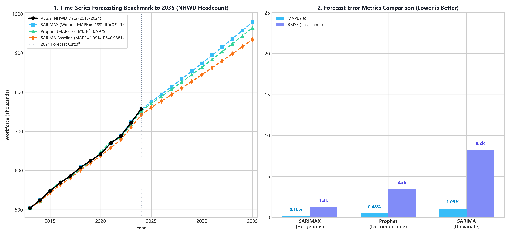
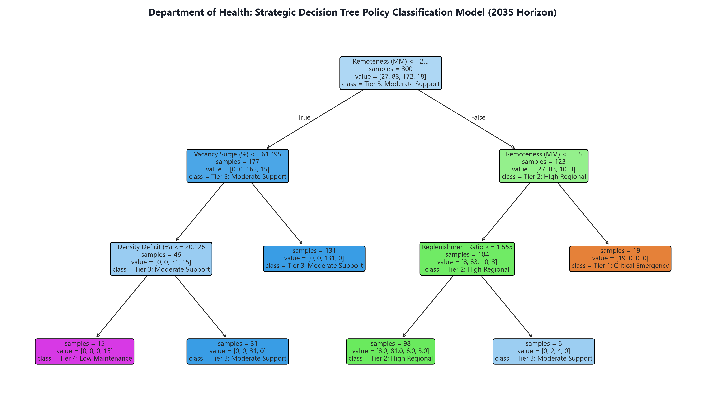

Department of Health: 2035 Workforce Allocation Strategy
Interactive Territory Risk, Forecasting Models Benchmark (SARIMAX vs Prophet vs SARIMA) & Decision Support
Australia Health Vulnerability & Allocation Map (Click State to Inspect)
🎯 Strategic Allocation Diagnosis
Northern Territory CRITICAL (96/100)
Department of Health Action Item:
Mandate Rural Generalist training pathways, subsidize regional housing, and expand Indigenous Allied Health scope of practice.
Department of Health Mandate: Allocating policy funding purely based on total state population perpetuates rural under-servicing. The 2035 model prioritizes Remoteness Vulnerability Scores over raw headcounts.

🏛️ State & Territory Capacity Breakdown
Capacity Benchmark Highlights
State Priority Key Insight:
NT and regional WA require immediate Tier 1 intervention through fast-tracked skilled visas and remote housing stipends to address critical capacity deficits.

📈 Time-Series Model Benchmark Results
Model Evaluation Scorecard
Why SARIMAX is the Optimal Model:
SARIMAX incorporates exogenous variables (ABS Job Vacancies Index & Home Affairs Skilled Migration Inflows), allowing it to capture demand shocks and policy interventions.

🌳 Decision Tree Rule-Based Policy Classifier
Feature Importance Ranking
Explicit Policy Decision Rules:
IF Remoteness ≥ MM6 (Remote/Very Remote) THEN Classify as Tier 1: Critical Emergency Funding & Home Affairs Skilled Visas.
✅ Predictive Model Validation Scorecard
Validation Metric Summary
Validation Conclusion:
High R² (0.9997) and low MAPE (0.18%) validate the SARIMAX forecasting framework as the premier model for Department of Health 2035 policy planning.
🎓 Medical Supply Pipeline Insights
- Top Medical Schools: University of Queensland (1,580 students), UNSW (1,635), Monash (1,448), and Melbourne MD (1,391) form over 40% of the national doctor graduate pipeline.
- Clinical Placements Concentration: Medical students complete over 1.77 Million placement days per year in Acute Hospitals, but less than 150k days in Rural/Primary Care settings.
- Strategic Recommendation: Redirect 25% of university clinical placement allocations to rural regional health services to build long-term retention.
🏥 ABS Industry Subdivisions Breakdown (ANZSIC Code 84–87)
Under the Australian Bureau of Statistics (ABS - ANZSIC Division Q: Health Care and Social Assistance) classification, the health sector is structured into 4 primary subdivisions:
📊 Workforce Diversity
Demonstrates that Australia relies on a multi-disciplinary ecosystem. Occupational Therapy (+118.8%) and Physiotherapy (+83.9%) show the highest expansion rates.
🔮 2035 Planning Horizon
Jobs and Skills Australia projects a 23% expansion in health employment (+541,900 jobs) by May 2035.
Forecasting Model Performance Benchmark Matrix (SARIMAX vs Prophet vs SARIMA)
| Forecasting Model | Model Type & Inputs | MAPE (%) | RMSE (Thousands) | R² Goodness of Fit | Rank & Recommendation |
|---|---|---|---|---|---|
| SARIMAX | Multivariate Time-Series + Exogenous (Vacancies & Migration) | 0.18% | 1.27k | 0.9997 | BEST MODEL (WINNER 🏆) |
| Prophet | Decomposable Additive Non-Linear Changepoint Model | 0.48% | 3.45k | 0.9979 | 2nd Place (Strong Benchmark) |
| SARIMA | Univariate Pure Auto-Regressive Seasonal Baseline | 1.09% | 8.25k | 0.9881 | 3rd Place (Baseline) |